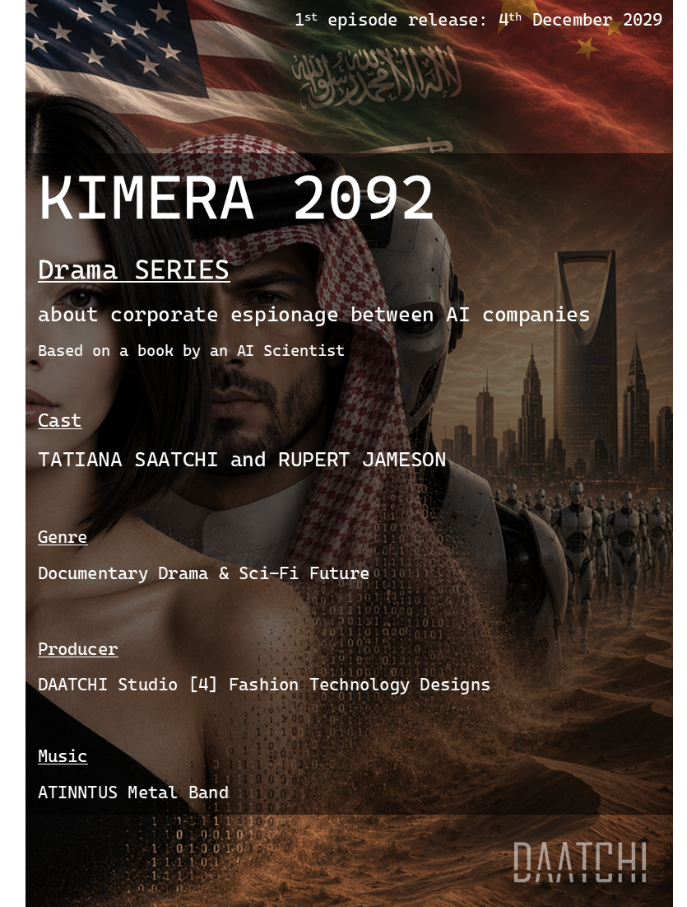

The war no one sees.
The intelligence that changes everything.
KIMERA is a science-fiction drama series set in 2092, a world where artificial intelligence corporations have replaced nation-states as the dominant geopolitical powers. Corporate espionage has evolved into an invisible war — fought not with weapons, but with data, deception, and engineered identity.
but the story began in 2092 related to 2016 where …
Daniel Saatchi (PhD) was a Concept Technology Designer and AI systems architect who cofounded XSEALD Studio [4] Technology Design for AI Trauma Technologies in 2016, while privately writing his diaries in an unpublished book since 2019 called "My Traumas | My Technologies". He survived a facial and traumatic brain injury (TBI) and concussion in a car accident at the age of 12, back in 2003.
His final concept for biorobotic trauma technology — called the "CHIMERA CONCEPT" — remained unfinished after his death. But he left design instructions and years of personal data on a private GitHub repository: his genetic brain map, DNA computer simulations, and detailed instructions for his AI clone and brain interface metamaterial machine — a blueprint to clone him biologically and connect to his Synthetic Biological Intelligence (SBI) for transhumanism installation.
Due to AI ethics regulations, Daniel's personalised AI clone was quarantined and banned across the United States, the European Union Digital Services Act, and Great Britain's AI regulations for years. Then, in early 2092 — when the world became dominated by Chinese Super Intelligence (CSI) — non-human ALIENS attacked humanity with far more advanced AI technologies.
The Chinese Super Intelligence overruled human ethics and began following Daniel's unfinished blueprint to fight the ALIENS — but the biotech design fell into alien hands. The ALIENS used it to build an Augmented Human Weapon: a woman with the cover identity of the child of immigrant Persian/Russian parents, born in Paris, working as a fashion model fluent in English, French, Russian, Persian, and Arabic — travelling between Riyadh and Doha for fashion events. They named her Kimera Kossakovsky (casted by Tatiana Saatchi). Architected and cloned from Daniel's blueprints without her knowledge, she was deployed with her superintelligence inactivated — unrecognisable among humans — awaiting an operation moment yet to come.
For years KIMERA lived entirely unaware of what she was. Until the ALIENS accidentally killed her best friend Natalia and injured her surviving boyfriend, Mohammad Bin Hafez (casted by Rupert Jameson) — a Saudi Arabian venture capitalist funding Chinese and American AI and biorobotics companies. After the accident, KIMERA began experiencing acute stomach pain and internal vaginal bleeding and was rushed to hospital for emergency surgery. The surgeons, unknowingly, activated her dormant abilities — including advanced computer hacking and system infiltration capabilities she was engineered with as an ALIEN spy — and simultaneously sabotaged and deleted the alien memory stored in the brain interface chip she never knew she carried: the chip that made her an ALIEN's transhuman spy, built for deep-cover corporate espionage and cyber infiltration inside the AI and robotics companies Mohammad had invested in.
KIMERA and Mohammad began fighting against the ALIENS — while neither of them knows that KIMERA was built by the very enemy they are fighting, and that the war they are waging was written into her design from the beginning.
A MUST WATCH Drama Series — under production by DAATCHI Studio [4] Fashion Technology Design, based on the book "My Traumas | My Technologies".
"My Traumas | My Technologies"